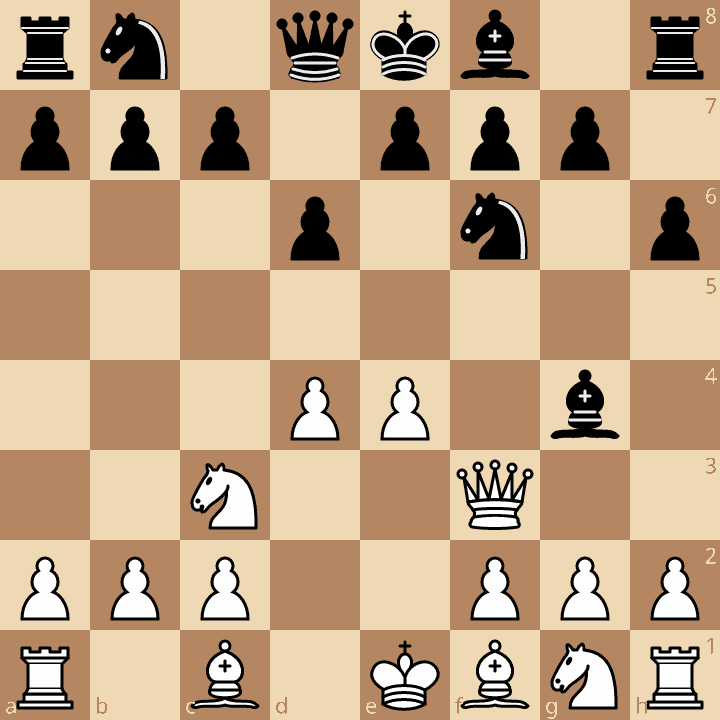
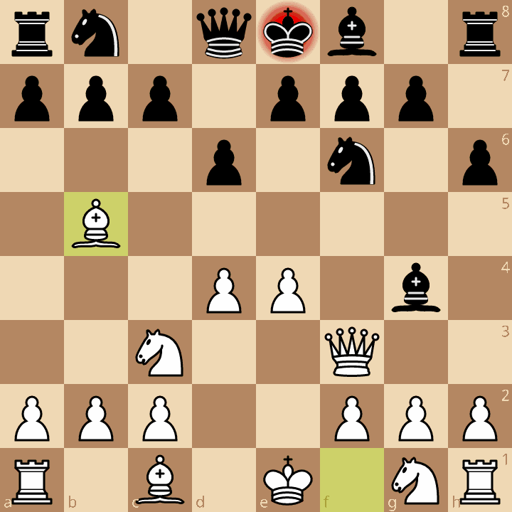
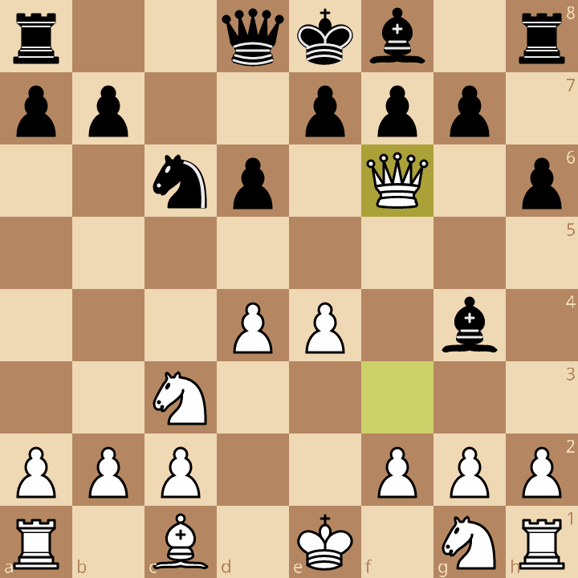

Chess engine, pt. 5: Quiescence search, endgames, repetition avoidance
This post is part of a series about building a chess-playing engine.
At this point in the series, our DIY chess engine has an okay skill level, but it actually has a few major flaws.
If you observe the games it plays, it occasionally makes really obvious (to a human) mistakes, it can’t checkmate with just a king and a queen, and it will draw by threefold repetition instead of easily winning the game.
These are really annoying issues if you don’t know what causes them, or how to fix them. The obvious blunders are especially annoying, because it seems like a logic error in your code, but it is actually a fundamental problem in our heuristic negamax algorithm.
In this post, I’ll therefore be examining each of these problems, what causes them, and how they can be fixed. In other words, this part of the series is a “fixing annoying issues” post.
Horizon effect
The horizon effect (Wikipedia) is a problem that affects most programs that deal with a game tree, like our chess engine. It stems from the fact that our negamax thinks ahead by some exact depth, like 4 half-moves deep, and it immediately stops without considering what happens at the 5th half-move.
An example position
An example is the best way to demonstrate the horizon effect. Consider this chess position:

In earlier versions of my chess engine, it would play Bb5+:

This is a bad move: White is leaving their queen under attack, eventually losing the bishop. At first, it seems really weird that a program that is based entirely on counting material would make a move that loses material.
To debug this kind of mistake, we can construct the Principal Variation (PV) line of the negamax search. The PV is the series of best moves from a position, according to the chess engine. The first PV move is White’s best move, then the second PV move is Black’s best reply, then White’s best reply, and so on.
In other words, the PV is the “thought process” of the chess engine that shows what it expects to happen in the future.
To construct the PV, an easy (but inefficient) method is to return a list of moves instead of just the best move from the negamax function. A more efficient way is to use the transposition table (from last post) repeatedly to get the best moves, but this is not guaranteed to get the full PV.
Now, here’s the PV line of the above position, annotated by me:
The engine’s PV is Bb5+ c6 Bxc6+ Nxc6 Qxf6.
White takes a pawn with a bishop,
then takes a knight with the queen.
With a depth of 5 half-moves, White thus gains a pawn (+100 centipawns) in material value.
However, at a depth of 6 half-moves, Black can take the queen (gxf6), and White thus has a -800 centipawn score from this exchange, i.e. it is a huge mistake.
Presumably, the chess engine searched at a depth of 5 half-moves and found that this exchange was advantageous, not seeing the big loss that happens at 6 half-moves.
Quiescence search
Let’s now try to mitigate this horizon effect.
Our chess engine evaluates this position as a +100cp advantage for White:

However, a human player, seeing this, would understand that White’s queen will immediately be captured on the next move, so this is actually a -800cp position. Therefore, if there are any pending captures in a position, our evaluation function can be misleading.
Let’s call any position without such pending captures a quiescent position, or quiet position.1 (The above position where the queen is about to be taken is a non-quiescent position.) Then, notice how our engine’s evaluation function breaks on most non-quiet positions.
To avoid the horizon effect, all we need to do is to only run our evaluation function on quiescent positions.
Quiescence search (Wikipedia) accomplishes this by always searching more moves into the future until a quiescent position is found, and only then running the evaluation function.
In other words, we only evaluate positions after all the captures are done; we never use the evaluation function on positions where pieces are hanging (i.e. non-quiet positions).
Our negamax search will thus be divided into two parts: regular search, and quiescence search (“q-search”). For example, for a depth 5 search, negamax would search 5 half-moves ahead, then, if the leaf node is not a quiet position, quiescence search might look an extra 2 half-moves further until the position is quiet. Theoretically, there should be no depth limit on quiescence search; it runs until it finds a quiet position.2
Quiescence search is different from regular search in that it does not search all possible moves. While regular search will search every move, quiescence search will only examine obvious captures, like pawn takes queen in the above example.
What makes a capture “obvious”, though? Chess players know when a capture is good because they run a quick mental calculation of the exchange. They look at which pieces are attacking, and which pieces are defending, and then they see if they gain material by capturing.
Static exchange evaluation
Static exchange evaluation (SEE) is a heuristic that performs this quick calculation, that is it predicts how much material a player will gain or lose from performing a certain exchange.
The key idea of SEE is that in any exchange, there are two choices for the player to move. They can:
- capture and keep the exchange going; or
- stop the exchange if it’s not worth it to continue.
SEE is based on this dichotomy; both players always pick the choice that ends up giving the maximal score for them.
Take this position as an example:
- White first captures with Rxd5, giving them a 900cp score.
- Black captures with Bxd5, giving a 400cp (for White) score.
- White then stops and plays a non-capture move Qh6, ending with a final score of 400cp.
In each step, the moves either side plays are advantageous for them (that is, any other move would be worse). It is worthwhile for White to trade their rook for Black’s queen, and it is worthwhile for Black to take back with a bishop. However, White does not want to trade their queen for the bishop.
Here is an example implementation of SEE in pseudo-code:
def eval_see(board, dest_square, our_color) -> int:
"""Simulate an exchange on a given square, and return its material gain for a given side."""
# attacker piece of our color with the minimal material value
least_attacker = board.get_least_attacker(dest_square, our_color)
defender = board.get_piece_on(dest_square)
eval = 0
if defender is not None:
least_attacker.capture(dest_square)
opponent_gain: int = eval_see(board, dest_square, our_color.flip())
# this represents the two choices of _stop_ and _capture_.
# if capture has a negative eval, stop the exchange and get 0 material gain.
eval = max(0, defender.value - opponent_gain)
least_attacker.undo_capture(dest_square)
return eval
Note: In the above code, I used a get_least_attacker(dest_square, our_color) method without explaining how to implement it.
Recall the
“I see you, you see me” check detection
method from the first chapter.
Suppose the king can move like a rook, and that the king-rook can capture an enemy rook.
Then, we know that this enemy rook is attacking the king
(and a similar process is used for other piece types).
We can generalize this method to any square to detect attackers for SEE.
Now that we have an SEE routine, whenever we want to score a capture move, we can call SEE and check if it seems like a good capture or a bad capture.3 This is of course only a heuristic, because our static evaluation doesn’t take into account pins, promotions and other edge cases. SEE works most of the time, though. Remember that we mostly use SEE in quiescence search; regular search does take into account pins and promotions.
Quiescence search, continued
Having discussed SEE, let’s return to quiescence search. Our goal is, before calling the evaluation function, to get to a quiet position. That is, as long as there are good capture moves, or in other words pending captures, we should not evaluate the position.
Quiescence search is just like normal negamax search, except we only examine the good capture moves. When we run out of good capture moves, we can finally evaluate the position.
To find good capture moves, we first generate all captures, then narrow down the list by discarding captures with negative SEE score. If there are no captures, that means the position is quiet.
However, if the player is in check, we can’t just generate captures; we should generate all possible moves that could evade the check. A position with check can not be quiet, since there is a risk of checkmate.4
An important detail is that in quiescence search, no player is forced to make a move as in normal chess. That is, if all the captures with positive SEE worsen the current score of the position (given by the evaluation function), you are allowed to use this current score, known as the stand pat evaluation. When the stand pat evaluation is better than any capture move’s score, it’s a sign that the best move in that position is a non-capture move, which we don’t care about in quiescence search. If the player is in check though, we are not allowed to use stand-pat, since we might be ignoring checkmate.
Another note about implementing quiescence search is that many people write it as a separate function that is called in leaf nodes of negamax, while I integrated it into negamax to reuse some logic.
Now, here is my pseudo-code for quiescence search within negamax. I have removed the alpha-beta portions to make the function simpler; for a further explanation of the code this is based on, see the end of part 2.
QSEARCH_DEPTH_LIMIT = 8
def negamax(position, depth: int, is_qsearch: bool) -> (Move, int):
"""
Return the best move and evaluation of a chess position.
Will only think `depth` half-moves ahead.
"""
if depth == 0:
if is_qsearch:
# hit depth limit (in quiescence search).
# note that eval is score from our perspective
return None, eval(position)
else:
# enter quiescence search
return negamax(position, QSEARCH_DEPTH_LIMIT, True)
best_score = -infinity
if is_qsearch and not position.is_check():
# stand pat score
best_score = eval(position)
# keep only captures with positive (good) SEE
possible_moves = [move for move in generate_captures(position) if eval_see(position, move.destination, position.turn) >= 0]
else:
possible_moves = generate_moves(position)
if possible_moves.empty():
# checkmate or stalemate
return None, eval(position)
best_move = None
for each move in possible_moves:
updated_position = apply_move_to_position(position, move)
opponent_move, opponent_score = negamax(updated_position, depth - 1, is_qsearch)
our_score = negate_score(opponent_score)
if our_score > best_score:
best_score = our_score
best_move = move
return best_move, best_score
Note: Make sure that you have a move generator that specifically generates captures, instead of taking a regular move generator and filtering its output. Move generation is an expensive operation because it checks the legality of moves, and you don’t want to check the legality of moves that you immediately discard. My engine’s quiescence search took a long while to work because I made this mistake.
Checkmate heuristics
An essential skill in chess is delivering checkmate with few pieces. In this section, I’ll focus on the KQ vs. K (king + queen vs. king) and KR vs. K (king + rook vs. king) endgames.
Here’s an example of how an early version of my engine performs in a K-Q vs. K endgame:
The engine draws by repetition, even though KQ vs. K is supposed to be an easy win for the player with the queen.
The typical strategy in the KQ vs K endgame and the KR vs K endgame is as follows:
- Bring the enemy king to the edge of the board.
- Have your own king near the enemy king.
- Checkmate with your king supporting the queen or rook.
The first two steps are essentially the preparation required to give checkmate; they set up all the pieces so they’re in the right place. Once we get to step 3, the engine should be able to see checkmate. Therefore, our goal is to help the engine do steps 1 and 2.
Cornering the enemy
Let’s first do step 1, bringing the enemy king to the edge of the board. In the code, we can do this by using piece-square tables.
To keep this article short, I’m only going to fully explain piece square tables in the next post. Essentially, in the evaluation function, a bonus or penalty is given to the score of a position depending on which square the king is on. In the endgame, we want the king to be at the center, so that can be a slight bonus. Meanwhile, a king at the edge of the board is vulnerable, so when the king is on the edge squares it gives a significant penalty.
Once we have this penalty, the engine will seek to gain advantage by cornering the enemy king, because it now knows that a king on the edge of the board is vulnerable.
We only want this piece-square table bonus/penalty to apply during the endgame, since in the opening of the game, we actually do want the king to stay at the edge. To concretely determine when it’s the endgame, we can count the pieces still remaining on the board, and if it’s under a certain threshold we say it’s the endgame.
Again, this is just a brief summary; see the next post for details about piece-square tables and determining when is the endgame.
Here is an example implementation in pseudo-code:
def eval_with_endgame_pst():
score = count_material() # this returns a score from our side's perspective.
# see prior posts for more information.
if is_endgame:
# 64 elements, one score per square the king could be on.
# positive is a bonus, negative is a penalty.
square_scores = {a1: -100, b1: -100, ..., e4: 10, ..., h8: -100}
score += square_scores[board.get_square_of(our_king)]
score -= square_scores[board.get_square_of(their_king)]
return score
Note that in a real engine you would not implement a piece-square table just for the king: this code is specifically for demonstrating this section’s key ideas. Also, don’t use a dictionary for a piece square table.
King distance
Now, after we bring the enemy king to the edge of the board (first step), we continue with the second step: bringing our own king over to help with the checkmate.
In the above example KQ-K endgame, White’s king was on the wrong side of the board. It would take multiple steps to move the king across the board, but the engine’s search depth limit prevents it from seeing that. Thus, the engine could not deliver checkmate, and kept shuffling the queen until it got a threefold repetition draw.
To fix this issue, we tweak the evaluation function so that, in king + piece vs. king endgames, there is a bonus to a position’s score if the kings are closer. Or, equivalently, there is a penalty if the kings are far away.
Here is pseudo-code implementing this penalty:
def king_dist_eval():
score = eval_with_endgame_pst()
if (number of non-king pieces == 1) and (the piece is not a pawn):
distance = (manhattan distance between kings)
# this factor specifies which side is winning (i.e. doing the checkmate)
advantage = 1 if (our side has the extra piece) else -1
# this might have to be tweaked
KING_PENALTY_FACTOR = 70
king_penalty = -distance * advantage * KING_PENALTY_FACTOR
score += king_penalty
return score
The king distance penalty kicks in when the engine detects that it’s in a KR-K or KQ-K endgame. Notably, the code excludes a pawn endgame, which has a different strategy.
Then, we calculate the Manhattan distance between the kings. I used this instead of the usual Euclidean distance because it gives an integer result and is easier to calculate. Essentially, Manhattan distance is the distance to get from one point to another, if you can only move up, down, left, right (four directions, no diagonals). (In retrospect, it might have been a good decision to use Chebyshev distance instead, since it corresponds exactly to the number of moves it takes for a king to move between two points.)
Next, a negative sign is added to the distance; recall that a larger distance between kings is worse (negative) for the player trying to do checkmate.
An “advantage” factor is also used to make the sign of the penalty correct (since negative evaluation is good for the opponent, and positive is good for our side).
Before we get a final number, we multiply the penalty by KING_PENALTY_FACTOR.
Once there are other bonuses or penalties in the evaluation function,
this factor sets the weight of the “king distance” penalty compared to others.
Once we have these two heuristics, bringing the enemy king to the edge, and bringing our own king over, the chess engine is fully able to win in a KQ-K endgame:
The engine can also win a KR-K endgame:
With the heuristics, the engine took 30 half-moves to mate, while under optimal conditions (according to Lichess’s tablebase) this position is mate in 27 half-moves.
We’ve thus successfully taught the engine how to mate with just a rook, or just a queen.
Note: Iterative deepening is really helpful in endgame situations like this; since there are less pieces on the board, the engine can usually search deeper in the same amount of time. Using a fixed search depth, the engine might complete a depth 6 search in 0.2 seconds and stop right there; with iterative deepening, the engine might attempt a depth 7 or higher search with the extra time it has.
Threefold repetition draws
In chess, when a position is repeated three times (not necessarily three times consecutively), this is called a threefold repetition, and the players may claim a draw.
In computer chess, threefold repetition is usually automatically declared a draw by the UCI server, so you technically don’t have to handle it. However, threefold repetition leads to really annoying outcomes, like in this real game:
Though Black (my engine) has the advantage, it fails to win because it enters a loop and draws by repetition.
I’m not exactly sure what the engine’s thought process is in this situation; I assume it’s thinking “I can always capture the queen one move later” before playing Ne4+.
Regardless, we don’t want the engine to draw by threefold repetition when it’s obviously winning. We need to implement a system that detects threefold repetition ahead of time, and assigns that position a draw (zero) score. Then, the engine will prioritize winning over drawing, and avoid repetitions.
First, we need to precisely define what a position being “repeated” means. Wikipedia says (emphasis mine):
Two positions are by definition ‘the same’ if pieces of the same type and color occupy the same squares, the same player has the move, the remaining castling rights are the same and the possibility to capture en passant is the same.
Recall from last post that we already implemented a system that detects repeated positions: the Zobrist hash is a unique number assigned to each position such that two identical positions will have matching hashes. Our Zobrist hash incorporates all the elements of this definition: pieces with a given type, color, and square; the castling rights; the en-passant rights; and the current turn.
Therefore, the strategy for detecting threefold repetition is to keep a stack (a list) of the hashes of recent positions, and compare the hash of the each new position to the ones in the list. If there is a match, that means there is probably a repetition, so we can assign a draw score to the position. Every time we make a move in negamax, add the new position to the top of the stack, and every time we undo a move, remove the position from the stack.
You may think that comparing the hash of new positions to every single hash in the list is computationally expensive. One thing that makes it less inefficient is that we don’t actually have to look at the entire list. Moves like captures and pawn moves are irreversible, so once they happen, it’s impossible to see the previous position again. The engine already keeps a counter of “how many half-moves has it been since the last irreversible move,” since that’s part of the Forsyth-Edwards Notation (FEN) string. Therefore, we only need to search that amount of positions backwards in the list. Usually, this is some small number.
Note that some chess engines don’t actually implement threefold repetition specifically. Instead, twofold repetitions are already considered a draw, since it’s a waste of time to re-run negamax on a position the engine has already seen. There are some exceptions, though. Specifically, this is the strategy my own engine uses:
- Three-fold repetition (i.e. the position is repeated twice) is an automatic draw. This follows the rule in chess.
- Two-fold repetition (position repeated once) is a draw if the position being repeated is part of the negamax search tree, and hasn’t actually happened on the real board yet. This means that we’re already running negamax on this position, so we avoid re-doing the computation.
- Two-fold repetition is not a draw if the position being repeated is in the history of the game, and actually already happened on the board. Two-fold repetition is not legally a draw in chess, and we still need to run negamax on the position for the first time.
If this strategy is too complicated, just ignore it and always score two-fold repetitions as draws. (The Chess Programming Wiki page has a differently-worded explanation of this concept, if it helps.)
Once repetition detection is correctly implemented, the chess engine will only go for repetition draws when the alternative is losing.
Conclusion
Once all the above features have been implemented, here is an example game between the upgraded engine and itself:
As you can see, the game does not end in a repetition draw, and quiescence search makes it so there are no horrible tactical blunders being played. This is definitely an improvement over prior versions of the engine.
At this point, a major issue still remains: human chess players often say my engine plays “weird”. I think this is because the engine has basic tactical (short-term) knowledge, but zero positional (long-term strategy) knowledge in chess. You may notice that in the game above, pawn promotion was the decisive factor in White’s win. Since pawns need many moves to get to the top of the board, the engine can’t see pawn promotion in negamax; pawn promotion is more positional than tactical. Clearly, positional chess skills can make or break a game.
In the next post, I’ll be explaining how the evaluation function of a chess engine can be improved (this component of the engine is where positional knowledge is encoded.) By the end of it, I’ll introduce neural networks to the chess engine, so that it plays better (and hopefully less “weird”).
-
More precisely, we can define a quiescent position is a position where there are no good moves that significantly change the evaluation function’s result; the position is thus stable, or “quiet”. ↩
-
Empirically, I found that limiting quiescence to an amount like 8 half-moves produces performs well (but I do not know why). ↩
-
See this section of the relevant Chess Programming Wiki article. ↩
-
Recall that a quiet position can be defined as a position where the static evaluation is stable. A checkmate instantly destabilizes the static evaluation, so positions where that might happen are not quiet. ↩